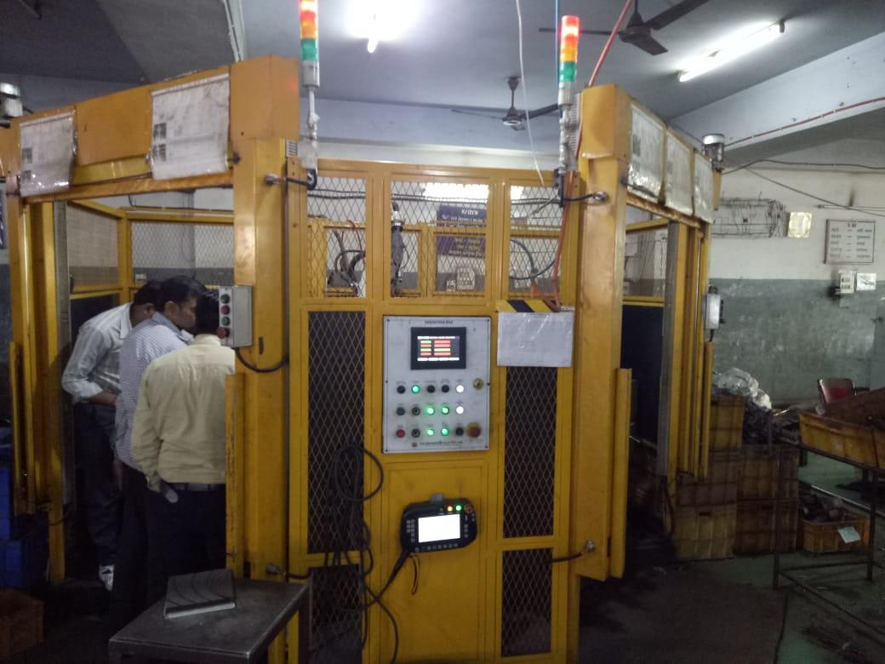
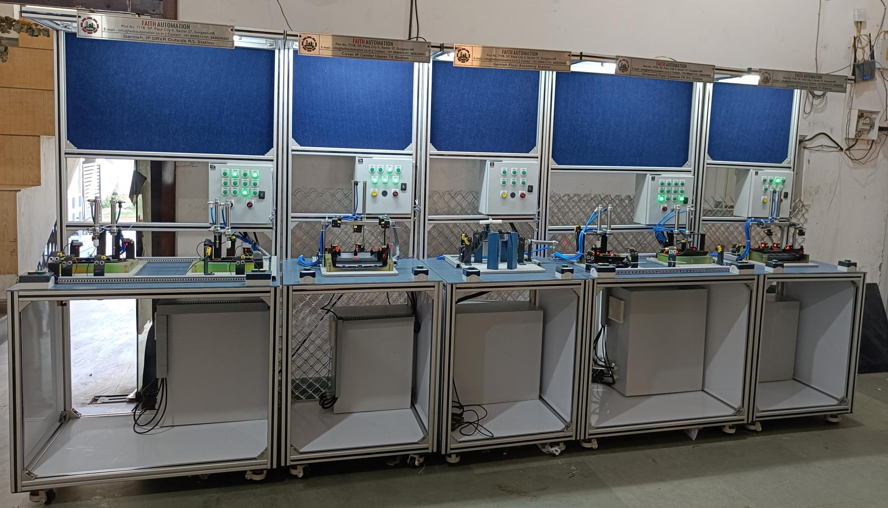
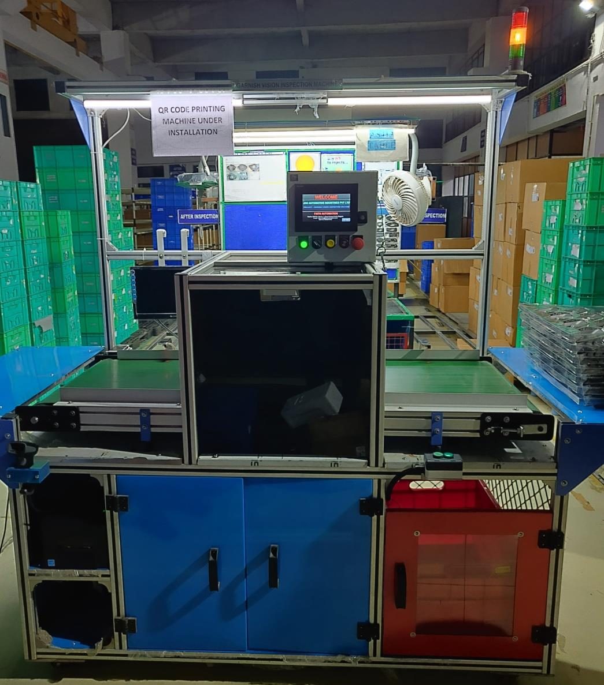
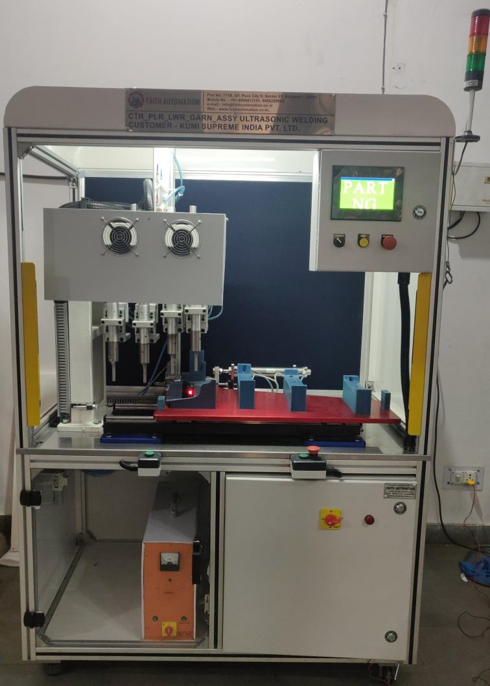
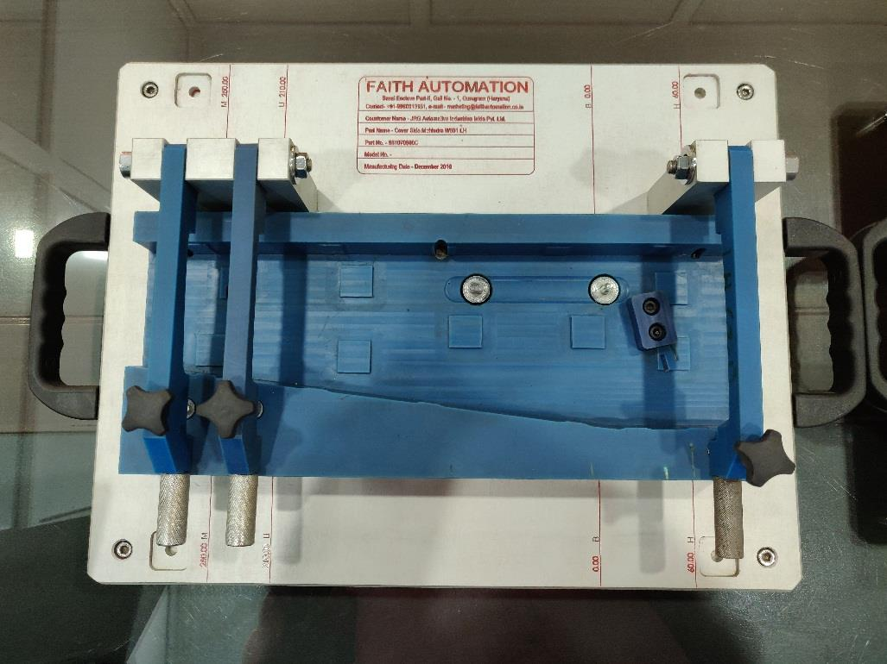
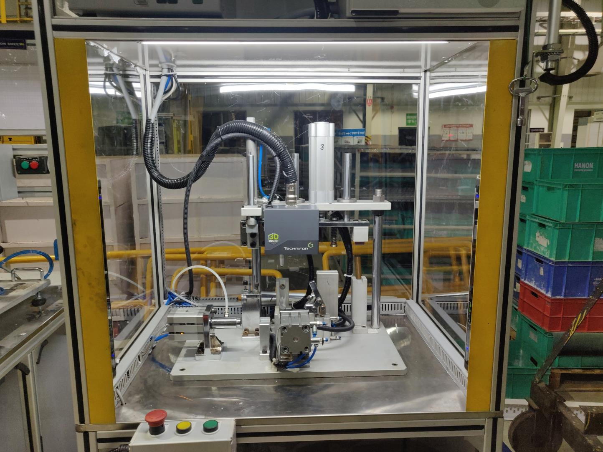

What We Do
From concept to commissioning, we deliver turnkey automation systems tailored to your manufacturing needs.

6-axis robotic cells with precision welding fixtures and comprehensive safety systems. Our solutions integrate seamlessly with your production line.
Custom multi-station assembly lines with automated feeding and poka-yoke systems designed for high-throughput manufacturing.


AI-powered vision systems for defect detection and quality assurance with real-time processing capabilities.
Differential pressure testing systems for air, water, and hydrostatic leak detection with micron-level sensitivity.


Precision fixtures and gauges for dimensional verification with CMM certification and GR&R testing.
Laser and dot-peen marking solutions for traceability and serialization with MES integration.
